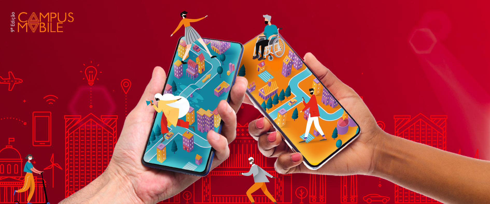
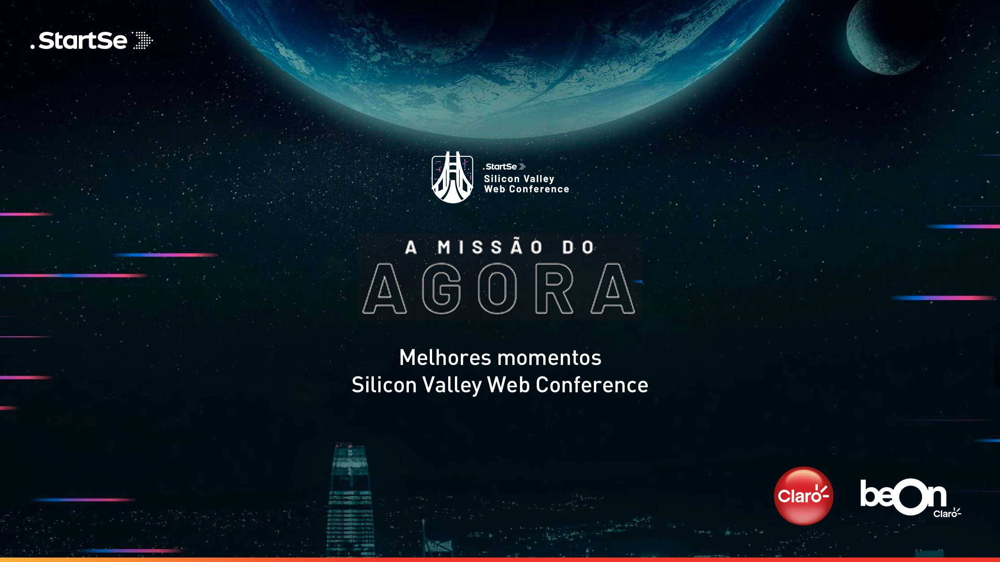
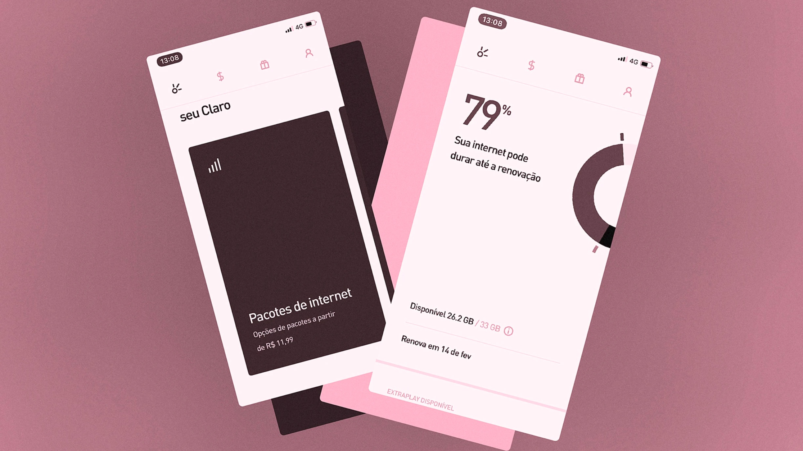

Eventos e Noticias
Estão abertas as inscrições para a 9ª edição do concurso Campus Mobile
22 Outubro 2020
Projetos que promovam impacto social serão premiados com uma imersão no Vale do Silício
O Instituto Claro acaba de abrir as inscrições para a 9ª edição do Campus Mobile, concurso de inovação e empreendedorismo que estimula estudantes universitários e recém-formados a desenvolverem soluções por meio de aplicativos, produtos e serviços do segmento mobile que promovam impacto social e benefícios à sociedade.
Serão selecionados 96 projetos nas categorias Saúde, Games, Smart Farm, Smart Cities, Diversidade e Educação. Os vencedores ganharão uma imersão no Vale do Silício, em São Francisco (Califórnia), em 2021. e Vice-presidente de Projetos do Instituto Claro.
O concurso é realizado pela Associação do Laboratório de Sistemas Integráveis Tecnológico (LSI-TEC), com patrocínio do Instituto Claro e apoio da Escola Politécnica da Universidade de São Paulo (USP) e do beOn Claro, o hub de inovação da Claro.
As inscrições devem ser feitas até o dia 22 de novembro por meio do site www.institutoclaro.org.br/campus-mobile
Lançamento 9ª edição CAMPUS MOBILE
14 Outubro 2020
Está chegando mais um concurso de ideias inovadoras que impulsiona soluções mobile com impacto social. E no lançamento desta edição, você pode participar de bate-papos insporadores sobre inovação
Inovação gerando impacto social
15/10 – quinta – 17h
Mediação: Daniely Gomiero – Diretora de Responsabilidade Social e Comunicação da Claro e Vice-presidente de Projetos do Instituto Claro.
Convidados:
Professora Dra. Roseli de Deus – LSI/USP
Diogo Natacci – beOn Claro
Maurício Benvenutti - StartSe
Edu Lyra – Gerando Falcões
Tendências para o novo normal
22/10 – quinta – 17h
(Categorias da 9ª edição e seu impacto na realidade pós-pandemia)
Mediação: Alexandre Martinazzo – LSI/USP
Convidados:
Guilherme Maluf - Claro Gaming
Ivisen Pinheiro - InovaHC
Luiz Agusto - Not.co
Marco Fishben - Descomplica
Ronaldo Tenório - Handtalk
Pitch de sucesso: como vender suas ideias para investidores
29/10 – quinta – 17h
Mediação: Flávio Rodrigues – Gerente de Responsabilidade Social da Claro
Convidados:
Rodrigo Duclos – beOn Claro
Ana Fontes - Rede Mulher Empreendedora
Francisco de Frutos - Plug&Play
Newton Arata - Port Capital
Pedro Neto - ImersaTech
Acompanhe todas as lives clicando no link abaixo
StartSe e beOn Claro apresentam os melhores momentos do SVWC
05 Outubro 2020
Inovação faz parte dos nossos valores, por isso a Claro está apoiando o Silicon Valley Web Conference, que traz grandes nomes do Vale do Sílicio para um megaevento online gratuito.
Sob curadoria do beOn, vamos transmitir as principais conferências no canal 500 da Claro tv, ou no Now Online - Canal do Cliente, a partir do dia 05 de outubro, de segunda a sexta, sempre às 12h.
beOn apresenta melhores Momentos SVWC
05 a 30 de outubroSegunda a sexta, das 12h00 às 13h00.
App Novo Minha Claro Móvel foi o vencedor no projeto Inovação pelo Design 2020, da Fast Company
30 Setembro 2020
A nova versão do aplicativo Minha Claro foi eleito o vencedor do projeto Inovação pelo Design 2020, da Fast Company, na categoria América Latina. A interface do novo aplicativo combina uma estrutura rápida e segura com recursos inteligentes que garantem aos nossos clientes a possibilidade de gerenciar suas contas com muito mais agilidade e fluidez.
Ao priorizar as funcionalidades que realmente impactam a vida das pessoas, o aplicativo combina um novo design como um diferencial exclusivo e premiado, oferecendo uma experiência simples, rápida e ainda assim, completa, onde o tempo e o orçamento dos nossos clientes são sempre valorizados.
Confira a matéria completa no site 2020 Innovation by Design Awards.